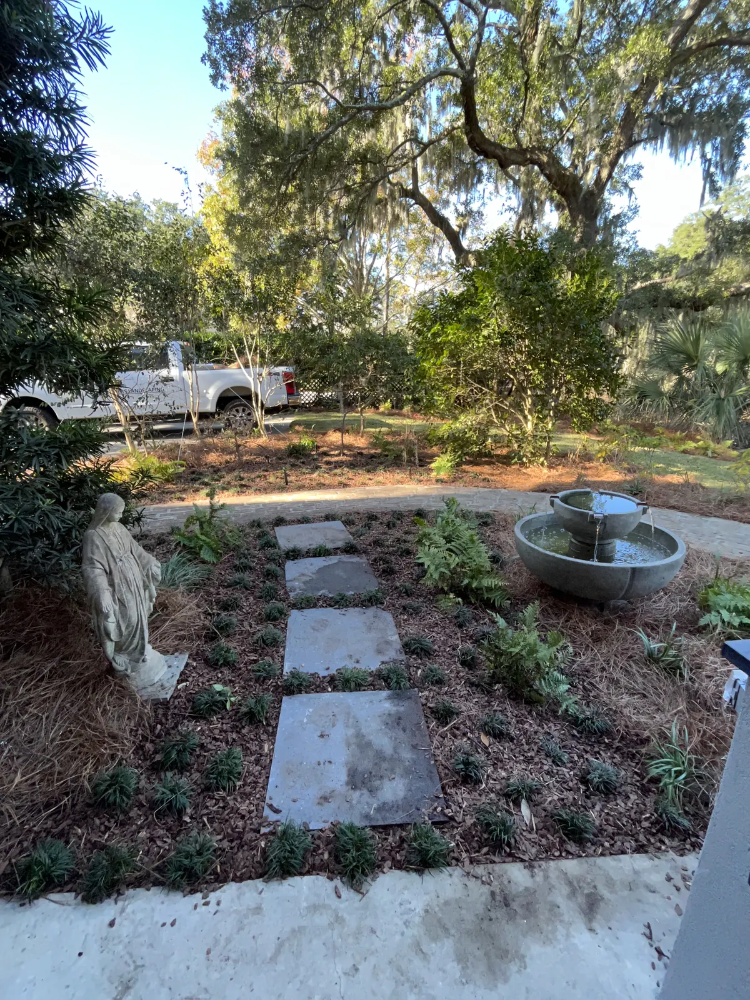
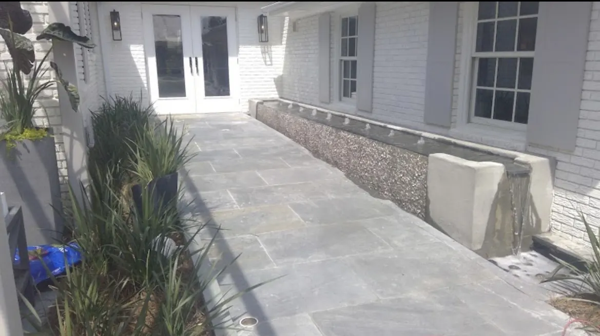

Outdoor Water Features and Fountains in Charleston, SC
Home / Fountain & water

Our Fountains and Water Projects in Charleston, SC
Experience the elegance of our finest fountain projects, where design and craftsmanship come together to create timeless water features. Each piece is thoughtfully built to bring movement, beauty, and tranquility to its surroundings.
Water Feature & Fountain Installations in Charleston
Highlighting our best fountain works, each design blends artistry and precision to create captivating water features. From serene garden accents to statement installations, our fountains are crafted to inspire relaxation and elevate any outdoor space. Every project reflects our commitment to timeless beauty and lasting quality.Showcasing our Recent Works
Explore a selection of our recent projects that highlight our expertise, craftsmanship, and attention to detail.Areas We Serve
Cramers Landscaping provides its services throughout:
- Charleston, SC
- Mount Pleasant, SC
- Isle of Palms, SC
- North Charleston, SC
- James Island, SC
- West Ashley, SC
- Kiawah Island, SC
- Summerville, SC
- Daniel Island, SC
- Johns Island, SC
Get in Touch Ready to Transform Your Landscape?
If you’re searching for a landscaping company in Charleston that delivers expertise, reliability, and long-term value, Cramers Landscaping is here to help. We offer free consultations and custom project quotes tailored to your needs.
Location
9153 Markleys Grove Blvd, Summerville, SC
Phone
Hours
Monday – Friday: 8:00 AM – 5:00 PM
Saturday: 9:00 AM – 2:00 PM
Sunday: Closed